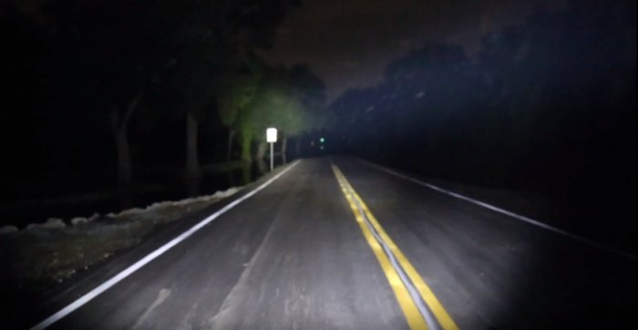
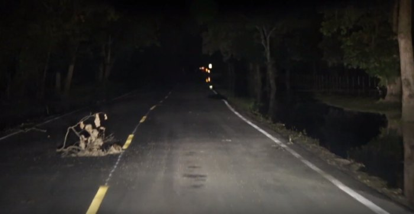

The Civil War was bloody and devastating and claimed the lives of hundreds of thousands of US soldiers. With a path that left many deaths in its wake, there are many places that are said to be haunted by the spirits of soldiers who may still be looking for peace. Numerous spots in the US are said to be haunted by the ghosts of the Civil War, including the haunted Patterson Road Bridge in Houston, Texas. The haunted strip of asphalt in Houston was home to a particularly vicious and bloody battle, and since then many people have reported otherworldly occurrences, particularly on the Langham Creek Bridge on Patterson Road.
There is some dispute as to what happened near the creek and the site of the future Patterson Road bridge. The general consensus agrees that Civil War soldiers engaged in some kind of skirmish or battle on the site. One story suggests that it was the site of a German settlement that was pro-union. The settlers were ousted and killed by Confederate troops who wanted to rid the land of Yankee influence. Another tale tells of pitched fighting between two ragtag militias who somehow managed to fend each other off of the land. It wasn’t a strategic battle per se, so the truth around the area is a bit muddy as less was documented.
There have been numerous reports of tapping on cars on this haunted bridge. According to those who have experienced it, the noise happens only at night, and it’s only when you’re on the bridge itself. Some people will park on the bridge and turn their headlights off. The tapping is said to begin and sounds like metal is lightly tapping the car. The sound is unexplained but is definitely not from wind or no other natural phenomenon can explain the sound. Witnesses say the noises come in rapid succession as if the ghosts are trying to notify the passengers.